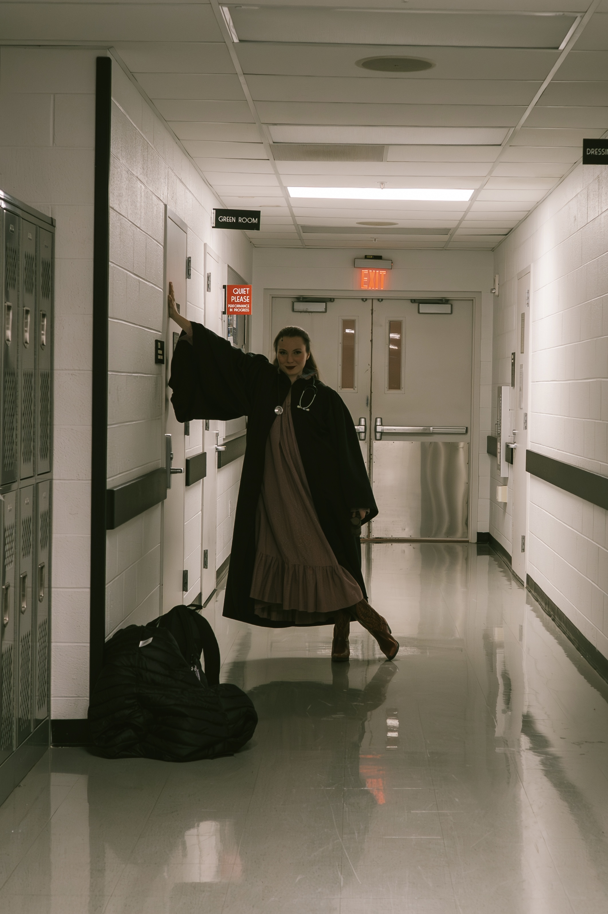

Actor • Singer • Dancer
Ashley
Ashley
Calza
A versatile triple-threat performer, Ashley combines classical training with contemporary edge. From leading musical theater roles to intimate screen performances, she brings depth, precision, and raw emotion to every character.